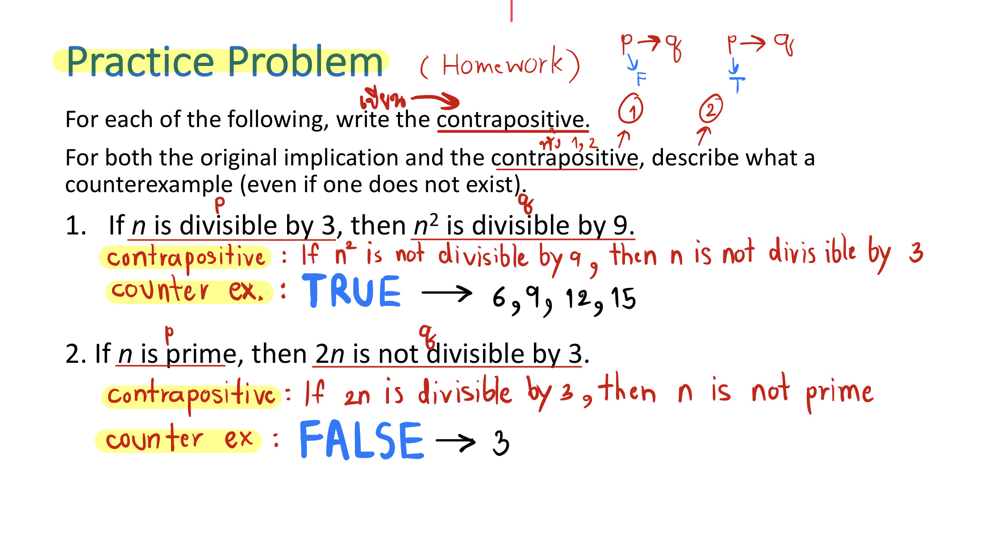
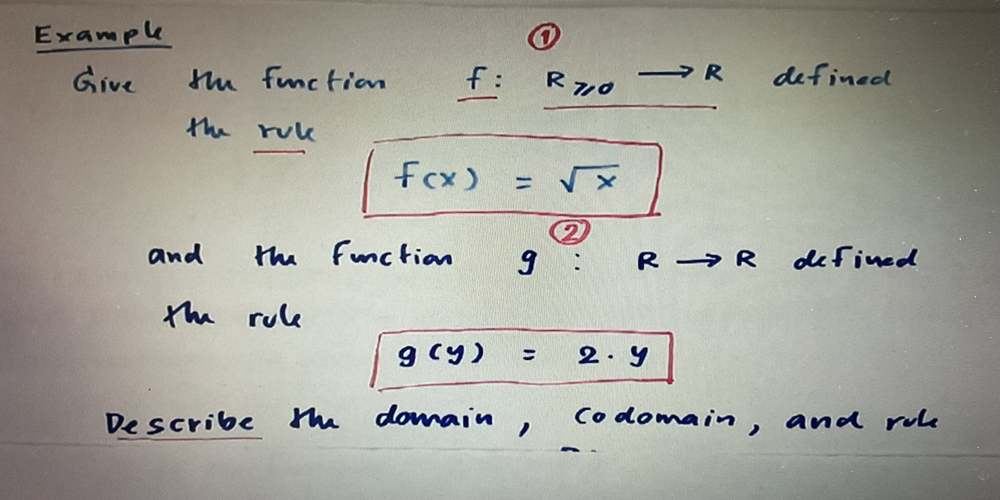
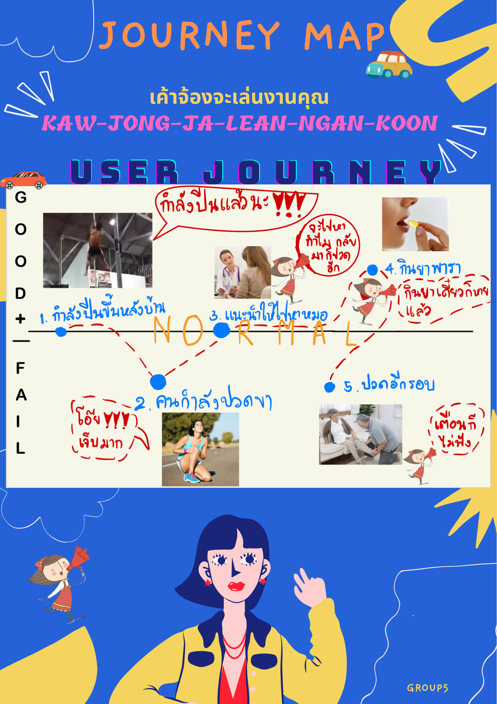
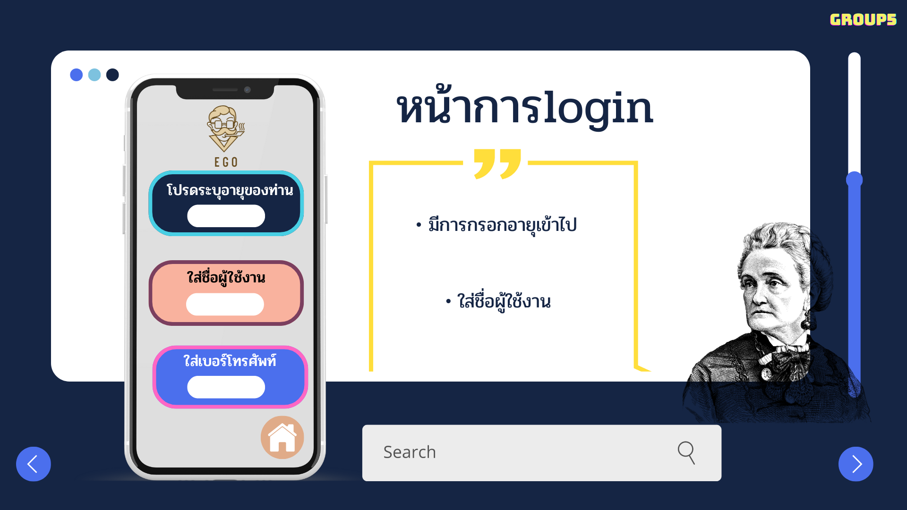
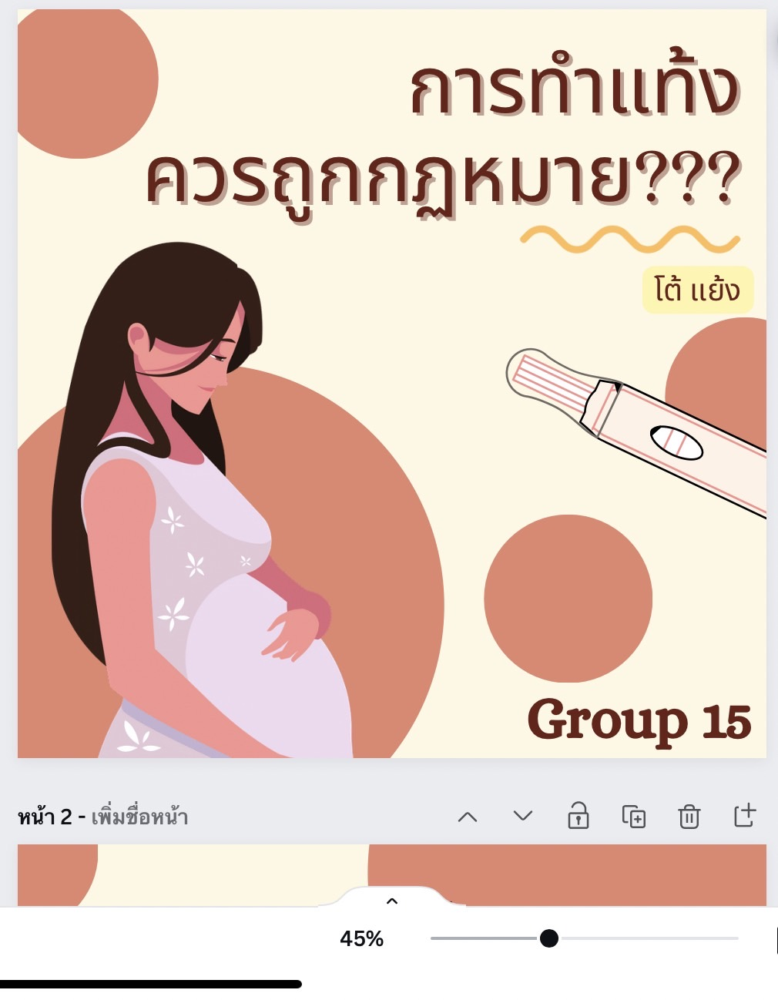
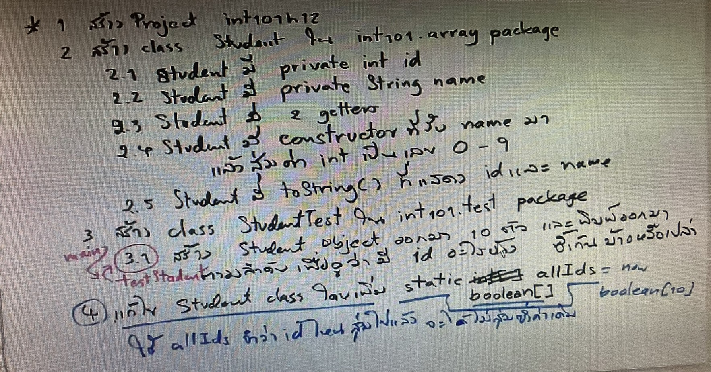
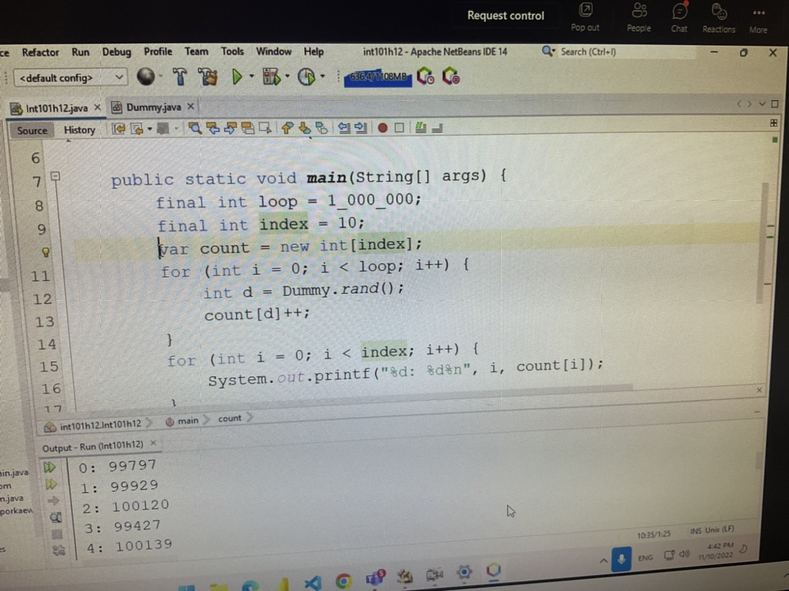
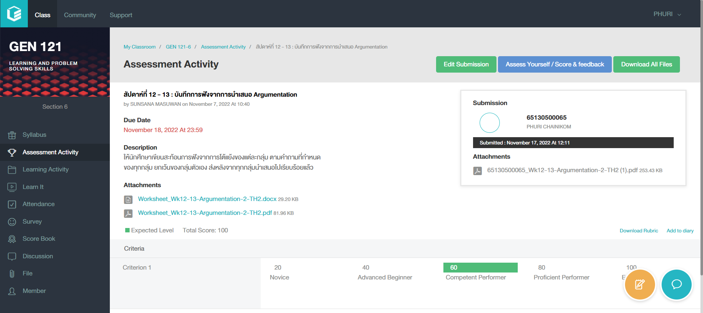
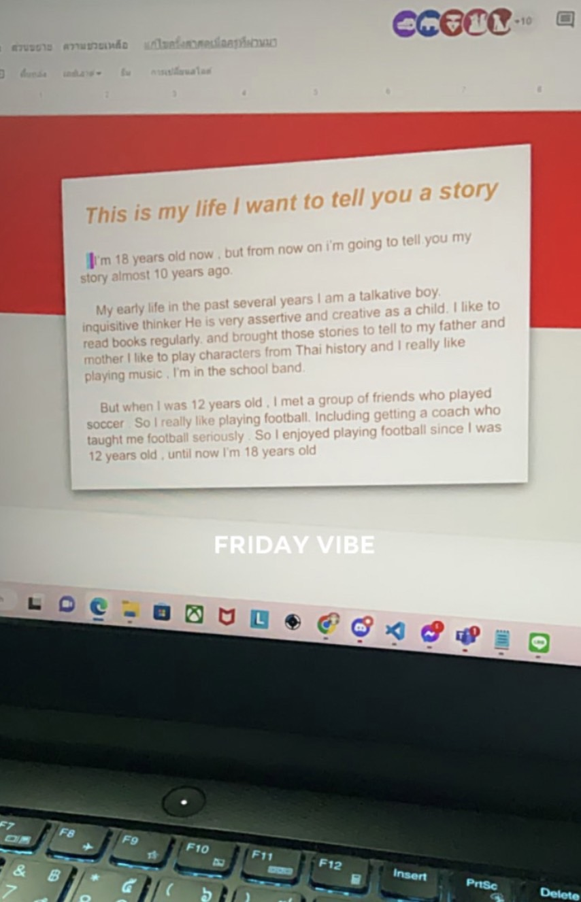
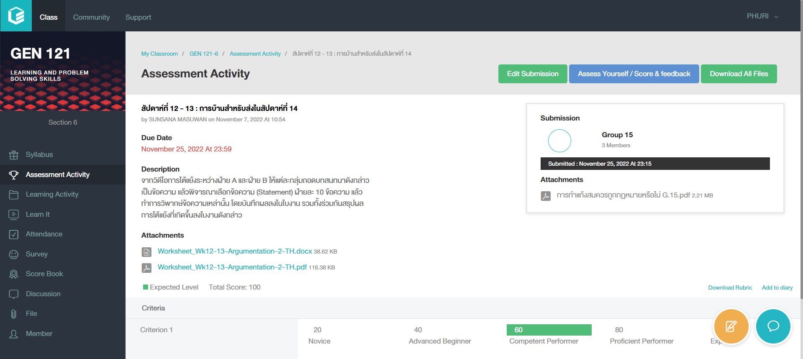

การเรียน (LEARNING)
28 ตุลาคม - 28 พฤศจิกายน 2565
" DAY 1 " -- 28 ตุลาคม 2565 --
ผมได้สอบวิชา Discrete Mathematics(คณิตศาสตร์) ค่อนข้างยากพอสมควร ผมทำได้ไม่ค่อยได้มาก แต่ทำเต็มที่ที่สุดแล้วไม่มีอะไรต้องเสียใจ!!!
" DAY 2 " -- 1 พฤศจิกายน 2565 --
หลังจากสอบเสร็จใหม่ๆสดๆร้อนๆ ก็พบกันต่อกับ Discrete Math แบบตึงๆ ยากพอควรแต่ก็ต้องผ่านไป
" DAY 3 " -- 2 พฤศจิกายน 2565 --
ผมได้สร้างผลงาน GITHUB ขึ้นมาในส่วนของ Journey map
 " DAY 4 " -- 3 พฤศจิกายน 2565 --
ก่อนเรียน com pro ก็ต้องสอบลีลาศแบบตึงๆครับ ไปรับชมกันเลย!!!
" DAY 4 " -- 3 พฤศจิกายน 2565 --
หลังจากจบลีลาศ ในช่วงบ่ายแก่ๆต้องมาต่อกับวิชา Computer programing ที่งงโจทย์มากๆ แล้วผมก็ไม่ถูกกับโจทย์คณิตมากๆ พยายามต่อไป!


" DAY 5 " -- 8 พฤศจิกายน 2565 --
ผมได้สร้างบทกับเพื่อนๆในส่วนของการโต้แย้งวิชา Gen ในส่วนของเรื่อง การทำแท้ง
" DAY 6 " -- 10 พฤศจิกายน 2565 --
ในวันพฤหัสบดีช่วงบ่ายของทุกๆสัปดาห์ผมและเพื่อนๆหลังจากที่เรียนลีลาศเสร็จ ต้องมาเรียนวิชา computer programing ต่อ (ยากมากๆหัวจะระเบิด555+)
 " DAY 7 " -- 17 พฤศจิกายน 2565 --
ผมได้ทำงานบันทึกสะท้อนการฟังในวิชา Gen สัปดาห์ที่ 12 - 13 : บันทึกการฟังจากการนำเสนอ Argumentation
" DAY 8 " -- 18 พฤศจิกายน 2565 --
ผมได้เขียนงานวิชา LNG (วิชาภาษาอังกฤษ) SEC49 ในส่วนของเรื่องประวัติชีวิตตนเองในอดีตที่ผ่านมา ในส่วนของผมได้ย้อนกลับไปร่วมๆ 10 ปีเลย
" DAY 9 " -- 21 พฤศจิกายน 2565 --
ผมและเพื่อนๆได้ช่วยกันคิดบทในงานวิชา LNG (วิชาภาษาอังกฤษ) SEC49 สำหรับเป็นบทสนทนาในการอัดคลิปวิดีโอส่งอาจารย์ประจำคลาสเรียน

" DAY 10 " -- 25 พฤศจิกายน 2565 --
ผมได้สรุปวิดีโอการโต้แย้งระหว่างฝ่าย A และฝ่าย B ให้แต่ละกลุ่มถอดบทสนทนาดังกล่าวเป็นข้อความ แล้วพิจารณาเลือกข้อความ (Statement) ฝ่ายละ 10 ข้อความ แล้วทำการวิพากษ์ข้อความเหล่านั้น โดยบันทึกผลลงในใบงาน รวมทั้งร่วมกันสรุปผลการโต้แย้งที่เกิดขึ้นลงใบงานดังกล่าว
สัปดาห์ที่ 12 - 13 : การบ้านสำหรับส่งในสัปดาห์ที่ 14
